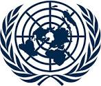
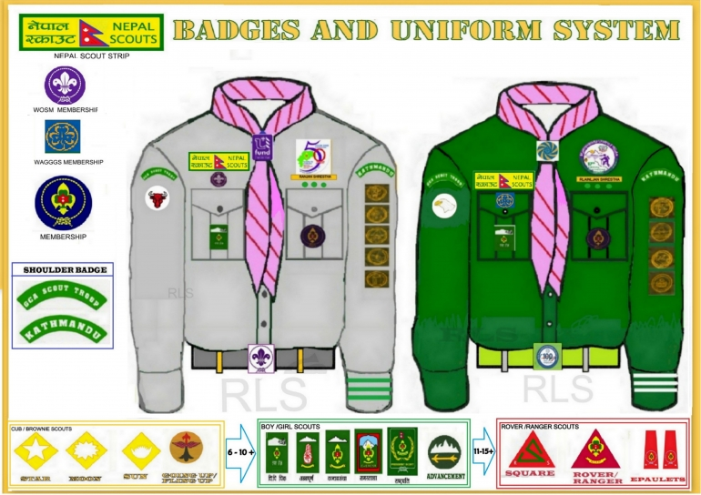

Qualification and Achievements
Education
Year
Institute
level of education
2074
Manakamana secondary school
Basic
2076
Manakamana secondary school
secondary
2078
Kist college&ss
Higher
Interest
Playing Basketball
Travelling
Listening Musics
Photography
Readig Books
Achievements
I was the member of Nepal Scout.
Hold first position in inter college football competition.
Got third position in science exhibition program
I am a former member of ChanguNarayan Trust
Represented country Nepal in MUN programme for the border disputes
 